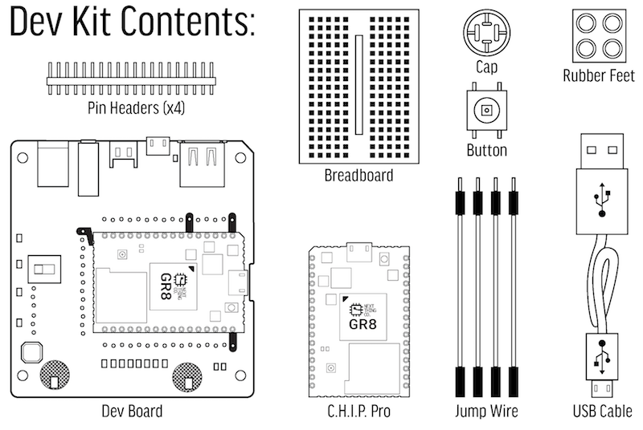
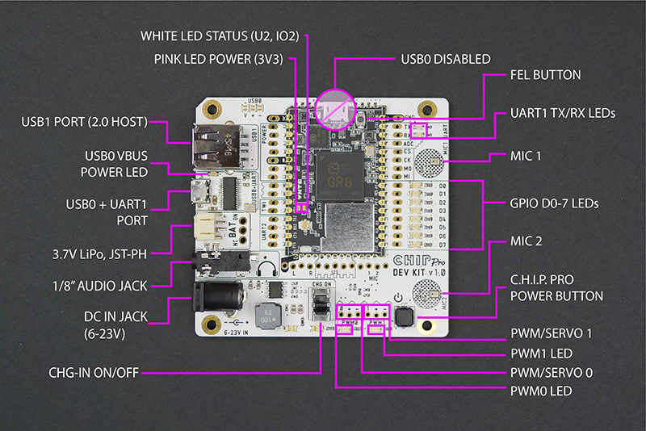
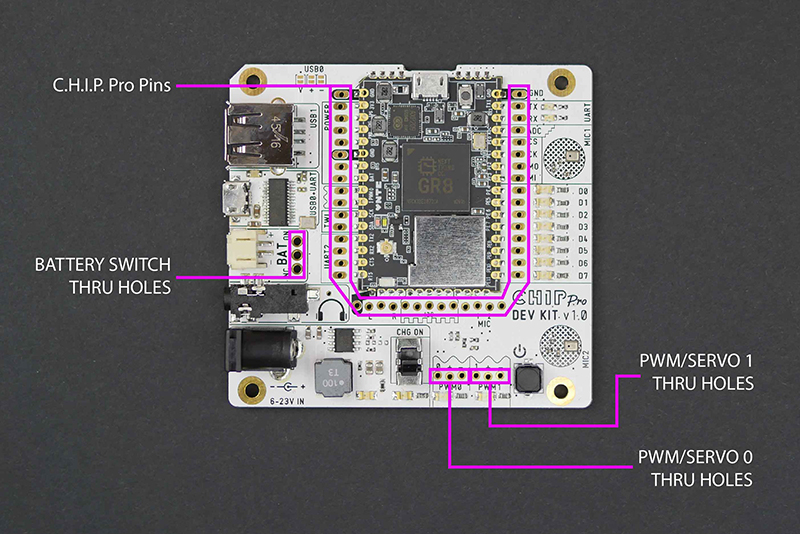
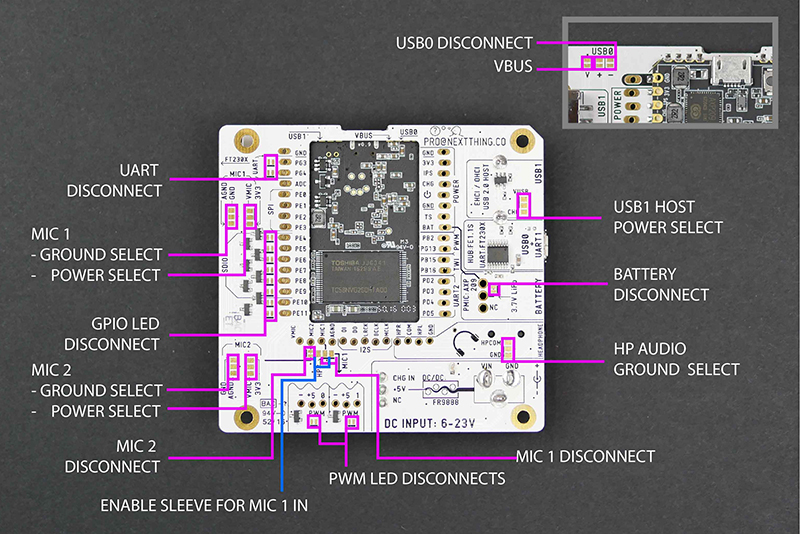
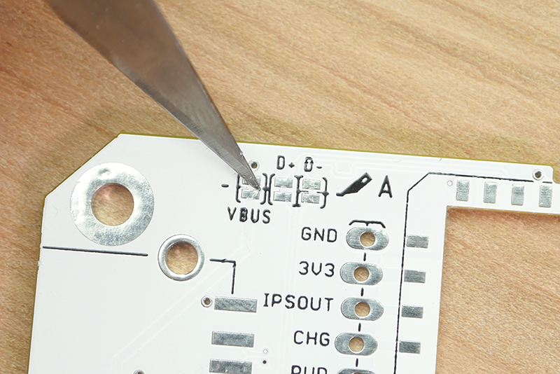
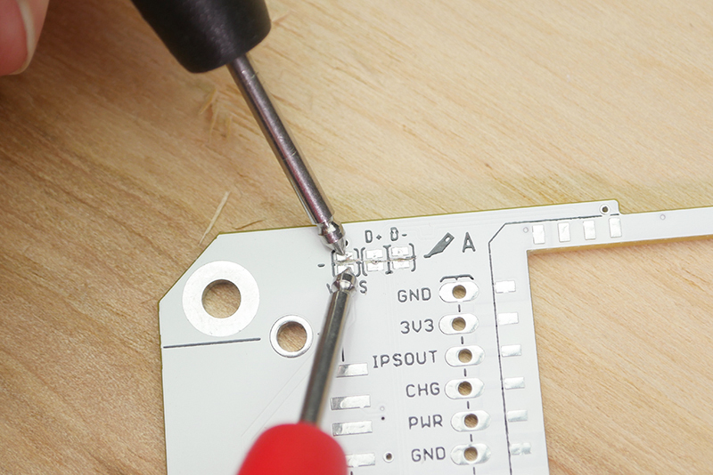
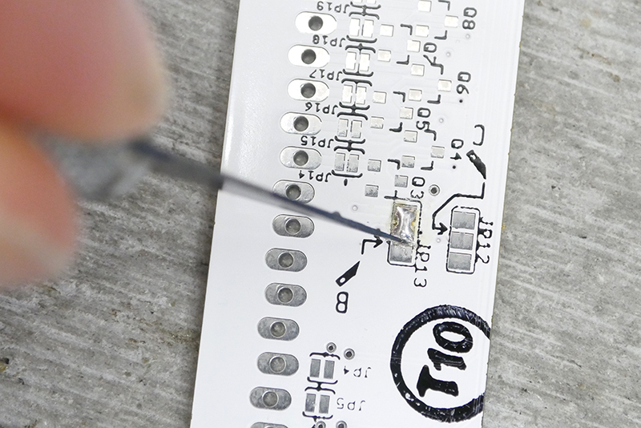
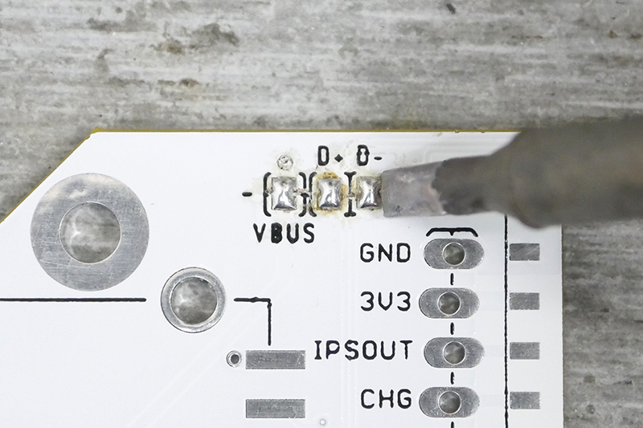
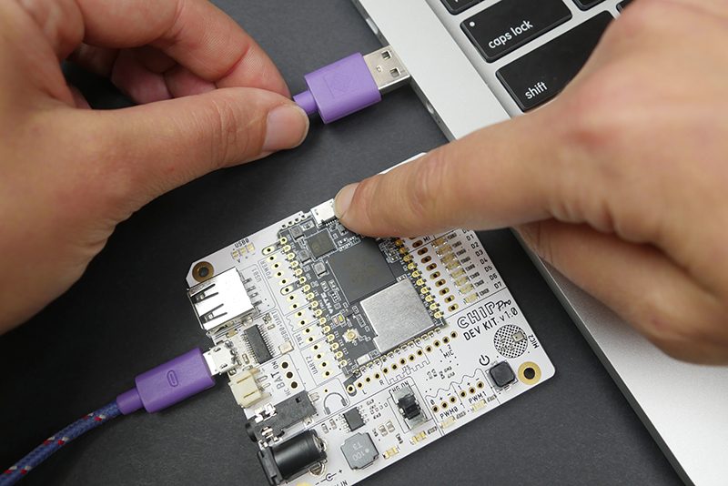

C.H.I.P Pro Dev Kit Intro
This documentation is a resource to getting started with the C.H.I.P Pro Developer’s Kit. There are lists of contents, descriptions of parts, explanations of how to use the unique features of the board, and some examples to work through so you can get up and running developing your product around C.H.I.P Pro.
Welcome!
The C.H.I.P Pro Developer’s Kit provides a complete electronic sandbox to test, iterate, and prototype products with the C.H.I.P Pro module. While many developer’s kits assume a high-degree of technical experience, we make this kit approachable, compact, and easy to use. We believe that great products can come from many backgrounds, so we provide several extras in this kit that help you get making and get comfortable. We even include an extra C.H.I.P Pro to get you started on your own PCB. If you do know it all, you’ll find this documentation will help your product be the best it can be, whether you’re making 1 or 1 million.
Contents: C.H.I.P Pro
If you need information unique to the C.H.I.P Pro module itself, such as schematics, specifications, dimensions, complete pin descriptions, a comparison between C.H.I.P and C.H.I.P Pro, and more, visit the C.H.I.P Pro documentation site.
What’s in the Kit

The C.H.I.P. Pro Dev Kit comes with accessories to get you started on your first prototype:
- 1 Dev board with C.H.I.P. Pro soldered on
- 1 C.H.I.P. Pro (loose)
- 4 Male/Female jumper wires
- Male 0.1" pin headers
- 1 Button with cap
- 1 Mini breadboard
- 4 Little Rubber Feet (LRF)
- 1 USB A to Micro-USB B cable
- How to get started worksheet
What’s on the Board
C.H.I.P. Pro Dev Kit Features

- USB1 Port (2.0 Host) - USB A jack lets C.H.I.P. Pro act as a USB EHCI/OHCI host for external devices. By default, this is powered by the USB micro jack. Cut the appropriate trace to power this from the barrel jack instead.
- USB0 VBUS Power LED - When there is power available to the USB1 port, this LED will illumniate.
- USB0 + UART1 - The micro USB jack provides serial and USB gadget connectivity, power from a USB power source, and UART connectivity for complete terminal messages from boot time.
- 3.7 LiPo battery jack - a JST connector for connecting and powering the dev kit from a 3.7 volt Lithium Polymer battery.
- 1/8" Audio Jack - This TRRS jack provides stereo audio out and optional mono input.
- DC In Jack - Connect a power supply ranging from 6V to 23V to power the C.H.I.P. Pro.
- CHG-IN On/Off Switch - Switch can enable or disable the power feed from the DC in jack, allowing you to isolate the power source.
- PWM0/1 LEDs - Two LEDs are connected directly to the PWM pins on C.H.I.P. Pro to make it easy to test PWM in software by dimming these LEDs.
- C.H.I.P. Pro Power Button - If there is power from DC, USB, or battery, you can hold this down for 1 second to turn C.H.I.P. Pro on, or hold for 5 seconds to turn it off.
- MIC1/2 - Two on-board microphones are spaced 40mm apart, ideal for testing voice control applications and beam-forming algorithms. (With sound travelling at ~340 m/s, the delay between the two microphones is 5.64 samples @ 48K sampling rate, or 117 microseconds)
- GPIO D0-7 LED - These are connected directly to GPIO D0 to D7 on C.H.I.P. Pro for easy software examples using GPIO control.
- UART1 TX/RX LEDs - These LEDs indicate when data is passing on the UART1 TX and RX pins.
- FEL Button - This button needs to be held down before C.H.I.P. Pro is powered up to put it in FEL mode for flashing new firmware.
Pin Headers

There are several areas where pin headers can be soldered into through-holes for easy access and control of the pins on C.H.I.P. Pro.
- PWM0/1 Through-Hole Breakout - Add pin headers to connect servos and LEDs with pulse width modulation.
- Battery Switch - Add a switch so you can easily disable or enable power from a battery. You will need to cut a trace to make this switch work.
- C.H.I.P Pro - The through-holes surrounding the C.H.I.P Pro can be filled with pin headers to give access to the pin you need.
Cuttable Traces
The C.H.I.P. Pro Dev Kit is designed to be flexible for your design and provide valuable built-in hardware. There are several cuttable jumpers that will disconnect onboard components and reroute power and data to where you need. You can find all of the jumpers outlined in the images below.
Most of these traces are on the back of the board with one very important exception. The USB0 jumpers on the front are connected to the micro-USB0 port on the Dev Kit. This renders the micro USB port on the C.H.I.P. Pro itself unusable. If you would like to use the micro-USB port on C.H.I.P. Pro these must be cut.

Front Traces
- USB0 Disconnect There are two (2) traces that are important for USB communication and one (1) trace that will disconnect USB power from the main micro USB connnector to C.H.I.P Pro. To disconnect the dev kit’s main micro USB connector, cut between the pads for the traces marked “+” and “-”. These are for the “D+” and “D-” USB data lines. This will allow you to use the micro USB connector on the C.H.I.P. Pro.
Back Traces
- UART Disconnect - Cut these traces to disable the UART functionality from the dev kit’s USB micro connector. This disables the FE1.1S USB hub controller IC.
- MIC1/MIC2 Power Select - Cut-and-solder these pads to change the power source for the onboard mics. Cut between the pads marked with the line, then solder bridge the other two pads to select 3.3 volt power instead of the default VMIC power for MIC1 or MIC2. By default the dev kit is wired to VMIC which provides power only while recording.
- MIC1/MIC2 Ground Select - Cut-and-solder these pads to change the ground for the onboard mics. Cut between the pads with the line, then solder between the other two pads to select GND instead of the default AGND power for MIC1 or MIC2.
- GPIO LED Disconnect - If you don’t want the on-board GPIO LEDs to illuminate, cut this trace.
- MIC2 Disconnect - Cut this trace to disconnect the onboard microphone and enable the MIC2 pin on C.H.I.P. Pro.
- PWM LED Disconnect - If you don’t want the LEDs to illuminate when using PWM from the C.H.I.P. Pro pins, cut this trace.
- MIC1 Disconnect - Cut this trace to disconnect the onboard microphone and enable the MIC1 pin on C.H.I.P. Pro.
- Enable Sleeve for MIC1 IN - Solder over these pads to use the sleeve (“S” of the TRRS) of the 1/8" audio jack.
- HP (headphone) Ground Select - Cut-and-solder these pads to change the grounding for the headphone jack. Cut between the pads with the line, then solder between the other two pads to use HPCOM instead of GND.
- Battery Disconnect - If you want to add a switch for a battery, you’ll need to cut this trace, then solder a switch into the through-holes provided.
- USB1 Host Power Select - Cut-and-solder to power the USB A (host) jack from the barrel jack (wall power) instead of the default power from the USB Micro.
How to Cut
Here’s what you need to know about modifying and repairing the traces on the dev kit to experiment and test different configurations.
Cut
To get the job done, you need to grab an X-acto knife or another small, sharp blade. The goal is to cut the trace connecting the two solder pads while NOT cutting anything else. The area to cut is very small so if you happen to own a pair of magnifying eye glasses now is the time to use them! To help stay in one place and not accidentally run the blade over another trace think of the cutting action as more of a digging action.

When you feel like you may have successfully cut through test the connection with your multimeter to confirm the disconnect.

Cut-and-Solder
Some of these require both a trace cut and a solder bridge. For example, the MIC1 power has three pads. Cut between two of the pads, and bridge two with solder.

Revert and Repair
Once you cut a trace it can be reverted to the original behavior. To replace the jumper solder a small piece of wire across all the contacts you wish to reconnect, or, if you are nimble, bridge the contacts with a solder blob.

Flash With An OS
Before you start building with the C.H.I.P. Pro Dev Kit the C.H.I.P. Pro needs to be flashed with an operating system. Grab these items, then read on:
Flash an Example
You can select an OS and example from flash.getchip.com in Chrome or Chromium browser.
Plug the micro USB cable into the USB0 port on the Dev Kit (not in the C.H.I.P. Pro!). Hold down the FEL button and with the other hand plug the USB cable into the computer. The C.H.I.P. Pro will power up which will be indicated by the pink power and white status LEDs illuminating.

The web flasher will search for and eventually recognize your board. Keep holding the FEL button down until the magnifying glass goes away and you have an option to choose an image to flash.
Choose one of our three delightful examples:
- Blinkenlights
- VU Meter
- Debian OS
Except for the Debian example, when you connect to C.H.I.P. Pro via serial, you will be logged in as root.
If you want to learn more about C.H.I.P. Pro software, such as connecting to WiFi and accessing GPIO, head over to the official C.H.I.P. Pro Docs page.
Blinkenlights
Controlling LEDs is fundamental to almost any hardware. This simple example provides easy-to-understand code with exciting results! Flash C.H.I.P. Pro with this image and watch the GPIO D0-D7 lights turn on and off in a cascading pattern and the two PWM LEDs pulse on and off.
There are two scripts running in the background. If you want to modify the code for this example, you can use the vi editor to play around with the code:
vi /usr/bin/blink-leds
vi /usr/bin/fade-pwms
This image is a very rudimentary Linux distribution, based on buildroot. It demonstrates a fast-booting system that boots into a software system that immediately controls hardware.
VU Meter
Want to make sure your Mics are working? Use this handy VU Meter example. Scream loudly, speak softly, tap the mics, and MAKE SOME NOISE, SPORTSFANS! You’ll see the LEDs light proportional to the volume of the noise captured by the two built-in mics.
If you want to modify the code for this example, you can use vi to edit it:
vi /usr/bin/vu-meter
This image is a very rudimentary Linux distribution, based on buildroot. It demonstrates a fast-booting system that boots into a software system that reacts to the environment and controls hardware.
Debian
We provide a standard Debian distribution, complete with all the package managers and conveniences you know and love. This package is ideal for development, since it is more flexible than the buildroot-based Gadget OS. However, you will want to keep track of your dependencies to more easily transition to the more nimble Gadget OS.
If you want to configure and build the kernel and rootfs for the Debian image, take a look at our github repo
Power
Input
There are three ports on the Dev Kit that support three different power supplies:
- Micro-USB port for AC adapter or powered USB hub
- JST-PH 2.0mm for Rechargable 3.7V Lithium Polymer battery
- DC-IN barrel jack for 6 - 23V AC adapter
For AC adapters we recommend getting one that supplies 12V and 3 amps.
Power can also be provided to three pins to power C.H.I.P. Pro.
- CHG-IN - connect 4.8 to 6 V of power to pin 4 (and GND) to provide power to C.H.I.P. Pro. If you have a 3.7V Lithium Polymer (LiPo) battery connected to BAT, then power provided to CHGIN will also charge the battery.
- BAT - connect a 3.7V Lithium Polymer (LiPo) battery to pin 8 (and GND) to provide power to C.H.I.P. Pro. You can charge the battery by providing voltage to the CHG-IN pin.
- VBUS - connect 5V to pin 50 (and GND to pin 53) to provide power to C.H.I.P. Pro.
Output
The C.H.I.P. Pro Dev kit can provide power to sensors and peripherals.
- VCC-3V3 - pin 2 provides 3.3V for sensors and anything else. This pin can provide a maximum of 800mA.
- For your servo needs PWM0 and PWM1 breakout through-holes provide 5V volts and 2.5A.
- IPSOUT - pin 3 provides a power rail based on the available power inputs for powering peripherals.
- USB1 Host - provide power to USB peripherals.
- PWRON - connect to ground to turn C.H.I.P. Pro on and boot the operating system.
Management
There are several ways to power the C.H.I.P. Pro Dev Kit and your creative endeavors. The Dev Kit boasts a AXP209 Power System Management IC designed to switch to any available power source. The following table details what happens with some different power scenarios.
| Power Source | Result |
|---|---|
| Battery | C.H.I.P. Pro is powered by battery |
| Battery + DC In | C.H.I.P. Pro is powered by DC In, battery is charged |
| Battery + USB In | C.H.I.P. Pro is powered by USB in, battery is charged (though more slowly than by DC In) |
| Battery + DC In + USB In | C.H.I.P. Pro is powered by DC In, battery is charged |
| Battery + low amperage DC or USB In | Battery powers C.H.I.P. Pro as needed to prevent shut down |
| Too much voltage! | C.H.I.P. Pro shuts down and may become permanently damaged |
Powering Off
If you are running any processes we recommend powering C.H.I.P. Pro off by holding the C.H.I.P. Pro Power Button down (for about 6 seconds) and wait for the power and status LED to turn off. Alternatively, you can switch off C.H.I.P. Pro through software. In both instances, once C.H.I.P. Pro has been powered down it is safe to remove power from the Dev Kit without the risk of losing data.
Connect and Control
C.H.I.P Pro is a headless computer, so you will need a separate computer in order to interact with it. The Dev Kit makes this easy and powerful, with a built-in USB to Serial converter for a direct connection to UART1. Connect the board to your computer with a common USB A to Micro-USB B cable. You can instantiate a UART connection with C.H.I.P Pro powered on or off. If you set it up before you power C.H.I.P Pro, you’ll be able to see all messages starting from boot.
The topics in this section cover features that are unique to the Dev Kit. Other topics, such as connecting to a network, USB Gadget serial connections, and using GPIO are covered in the C.H.I.P. Pro documentation
USB-Serial (UART1) Connection.
There are several applications you can use to make a USB-serial terminal connection to the Dev Kit. Below are some of the most common.
OS X & Linux
Connect the Dev Kit to your computer and open a terminal window. Find out the tty.usbserial dev path the Dev Kit is attached to by using the command below or use the tab key to autocomplete, like screen /dev/tty. <tab>
ls /dev/tty.*
On Linux, this is usually ttyUSB0, and on OS X, something similar to usbserial-DN022CZ9. On Debian systems, you may need to install screen:
sudo apt-get install screen
Use Screen to create a serial terminal at 115200 bps:
screen /dev/tty.usbserialxxxxxxxx 115200
Log in to C.H.I.P. Pro using the default user and password chip.
Exit Screen
When done, kill all windows and terminate Screen with Ctrl+A Ctrl+. If you get the error “Cannot open line… Resource busy” it’s because the last session was not properly exited. Search for the open file and active process using usbserial:
lsof | grep usbserial
You will get an output that looks something like this:
screen 27127 Sefi 5u CHR 18,0 0t0 605 /dev/tty.usbserial
Note the process ID. In this case, it’s 27127. Then run:
screen -x 27127
It will return to your previous screen session. Then use Ctrl+A Ctrl+\ to close it properly (will ask you to confirm).
Windows
Download the PuTTY terminal emulator or Cygwin.
Open your Device Manager and find the port labeled USB Serial to find the COM port number. The items to plug into either Cygwin or PuTTY are: * COMxx number as the Serial Line or COM Port * 115200 as the Speed or Baud Rate * In PuTTY choose Serial as the Connection Type.
Audio
The C.H.I.P. Pro Development Kit has several ways to access audio in and out. Stereo audio in and out is handled by a 24bit/48K DAC built-in to the GR8 processor. There are also digital options that you can use, but require configuration of the Linux kernel and additional hardware to access.
- Audio output via 3.5mm TRRS jack
- Mono input via 3.5mm TRRS jack
- Stereo microphones
- MIC1 and MIC2 header pins
- I2S digital audio
- SPIDIF digital audio
Input
There are two (2) analog MEM (micro electro mechanical) microphones on the Dev board. These are enabled by default.
If you want to use the MIC1 and MIC2 pins for audio input, you’ll need to cut a trace.
The “Sleeve” (bottom-most ring) on the TRRS jack can be used as a mono audio input, suitable for microphones commonly built-in to headphones. If you want to used this connector, you’ll need to cut a trace.
Output
The 3.5mm TRRS jack provides stereo output suitable for headphones or amplification to stereo speakers.
USB
The USB A jack can be used to connect and use popular accessories like storage, MIDI controllers, keyboards, pointing devices, audio hardware, and more. C.H.I.P. Pro does not provide power to the USB A port on its own, so the Development Kit is a good example of how this works.
On-board LEDs
The Dev board provides ten LEDs to make it easy to test your GPIO skills without having to wire anything up.
GPIO LEDs
Eight of these LEDs can be turned on and off with standard Linux sysfs commands to the GPIO pins DO to D7.
PWM LEDs
There are also two LEDs that are connected to the PWM pins for testing and learning about pulse width modulation.
Make it with C.H.I.P. Pro!
The Dev Kit board contains hardware to make rapid prototyping with C.H.I.P. Pro a unique experience. When it comes to software however, the C.H.I.P. Pro and Dev Board are the same. To learn more about C.H.I.P. Pro, such as connecting to WiFi and accessing GPIO, head over to the official C.H.I.P. Pro Docs page.
Open Source
The C.H.I.P. Pro is open source hardware. Get all the details in our github repo.